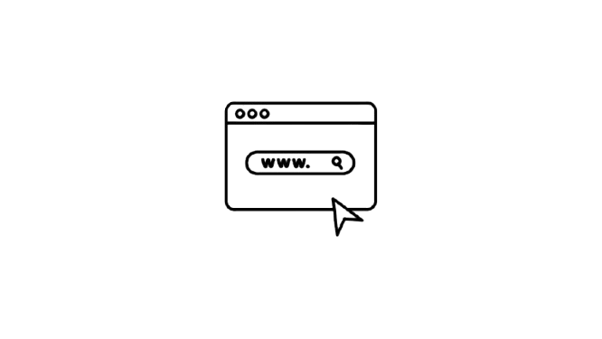
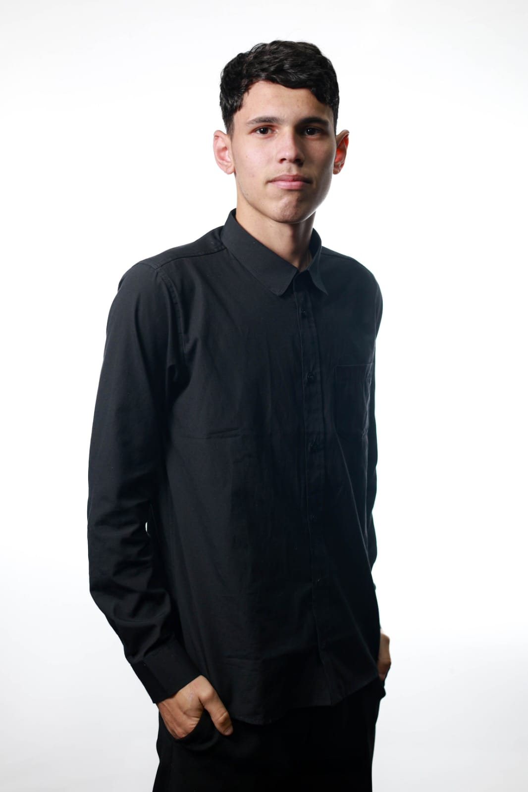
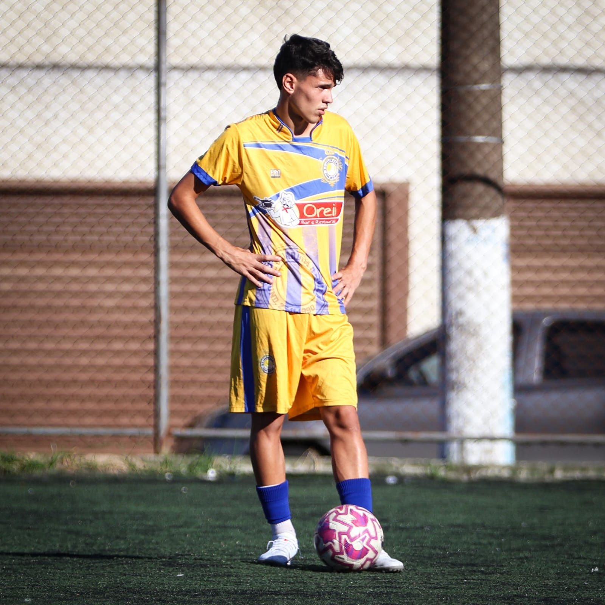

O FootStats é uma plataforma que une a paixão pelo futebol à análise de dados. Por meio das informações fornecidas pelos usuários, permite comparar diferentes torcidas e testar conhecimentos sobre o esporte através de quizzes interativos, transformando respostas e opiniões em estatísticas que revelam novas perspectivas sobre o futebol.
Valorizamos a paixão que conecta torcedores, reconhecendo que cada time possui uma história e uma torcida que merece ser representada.
Acreditamos que cada torcedor tem algo a contribuir. Por meio de suas respostas e informações, construímos comparações e estatísticas.
Incentivamos o aprendizado e a curiosidade sobre o futebol, transformando respostas e informações em dados que revelam novas perspectivas sobre o esporte.

Minha trajetória atual

Minha trajetória no futebol
O futebol faz parte da minha vida desde a infância. Cresci jogando em escolinhas de futebol e, aos 11 anos, comecei minha trajetória em clubes de futsal e futebol de campo, sempre buscando realizar o sonho de me tornar jogador profissional.
Durante essa jornada, conheci diversos estados do Brasil e, entre os 15 e 17 anos, morei em alojamentos de clubes, longe da minha família. Essa experiência me proporcionou amadurecimento, independência e aprendizados que levo comigo até hoje.
Com o passar dos anos, decidi seguir um novo caminho e ingressei na SPTech. Escolhi o futebol como tema do FootStats porque ele sempre fez parte da minha vida e muita gente que só de me conhecer já me relaciona ao futebol e acabo me identificando muito com esse tema. Então acabei unindo minha paixão pelo esporte ao interesse por conhecimento e tecnologia.